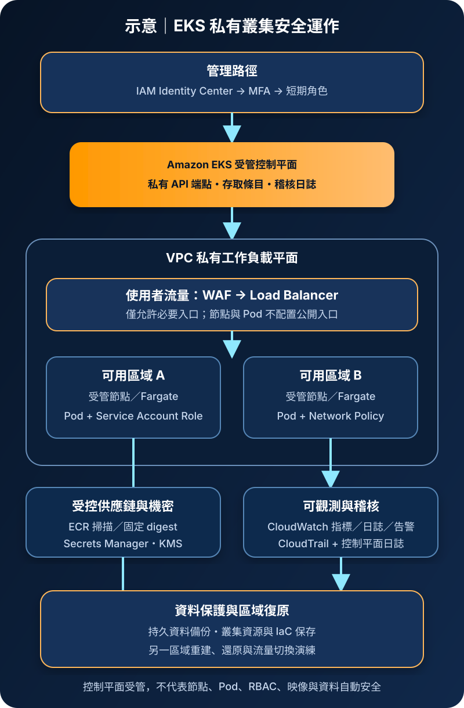

Amazon EKS：受管 Kubernetes、隔離與治理
Amazon Elastic Kubernetes Service（Amazon EKS）提供受管 Kubernetes 控制平面，讓團隊使用 Kubernetes API 與生態工具部署容器工作負載。受管控制平面降低部分平台維運負擔，但不會自動保護節點、Pod、RBAC、映像供應鏈、網路、機密、資料或復原流程。
作者：Dr. William｜查閱與發布：2026-09-05
服務定位
EKS 適合需要標準 Kubernetes API、宣告式資源、Controller、Operator 或既有雲原生工具鏈的團隊。AWS 管理區域內跨多個可用區域的 Kubernetes 控制平面；工作負載可執行於 EKS 受管節點群組、自管 EC2 節點、AWS Fargate 或其他受支援選項。
EKS 是 Kubernetes 平台基礎，不是完整應用生命週期方案。容器映像可由 Amazon ECR 保存，機密可由 AWS Secrets Manager 或 Systems Manager Parameter Store 管理，資料可由 RDS、DynamoDB、S3、EBS 或 EFS 承擔。部署、政策、升級、監控、備份與事故應變仍需組織建立流程。
核心概念
控制平面與運算
- Cluster：每個叢集有 Kubernetes API 端點與受管控制平面，Kubernetes 版本有支援期限與升級責任。
- Node：承載 Pod 的運算資源。受管節點群組協助節點佈建與更新，但作業系統選型、升級窗口、容量與工作負載風險仍需治理。
- Pod：Kubernetes 最小部署單位，可包含一個或多個共享網路與儲存脈絡的容器；Deployment、StatefulSet、Job 等控制器維持其狀態。
- Fargate：可讓符合條件的 Pod 不直接管理 EC2 節點，但仍須管理 Pod 規格、IAM、映像、網路、資源要求與應用安全。
身分、網路與擴充
- 叢集存取：AWS IAM 驗證進入 EKS API，EKS 存取條目與 Kubernetes 授權共同決定可執行動作；兩層權限都要最小化。
- Pod 身分：EKS Pod Identity 或 IAM Roles for Service Accounts 可把短期 AWS 權限綁定到特定工作負載，避免共用節點角色。
- VPC CNI：Pod 網路與 VPC 位址、路由及 Security Group 密切相關；NetworkPolicy 是否生效取決於網路元件與正確設定。
- Add-on：DNS、網路、代理、Ingress、儲存驅動及觀測元件需要版本相容、來源驗證、權限限制與持續修補。
適合與不適合的使用情境
適合
- 產品依賴 Kubernetes API、Helm、Operator、Custom Resource、GitOps 或跨環境一致的 Kubernetes 工具鏈。
- 多個容器服務需要統一的排程、服務探索、滾動部署、資源配置、政策與擴縮機制。
- 組織已有平台工程、Kubernetes 安全、版本升級與事故處理能力，能承擔叢集及擴充元件生命週期。
- 需要依工作負載選擇 EC2 節點、加速器、Spot、Fargate 或其他適用容量選項。
不適合或不能單獨完成
- 單純運行少量容器且沒有 Kubernetes 相依性時，Amazon ECS 可能以較少平台元件完成相同目標。
- 單一短函式符合事件與執行限制時，Lambda 可能更直接，無須維護 Kubernetes 物件與元件。
- 團隊缺乏叢集升級、RBAC、網路政策、資源限制、容器供應鏈及備份能力，卻希望以受管控制平面免除全部維運。
- 把 Pod 本機檔案系統當永久資料庫，或預期跨可用區域的控制平面等同完整跨區災難復原。
示意故事案例：跨可用區域的會員服務平台
以下為架構示意，不代表特定組織或正式部署。會員平台以 EKS 執行 API 與背景工作。人員透過 IAM Identity Center、MFA 與短期角色存取私有 EKS API，叢集存取條目只授予職務所需範圍。外部流量經 AWS WAF 與負載平衡器進入兩個可用區域的私有工作負載；節點與 Pod 不直接提供公網入口。每個 Kubernetes ServiceAccount 綁定獨立工作負載角色，僅能存取指定資源。ECR 映像固定 digest 並先完成掃描與核准；機密由 Secrets Manager 或 Parameter Store 提供，資料與適用儲存採 KMS 加密。CloudWatch 收集指標、應用與控制平面日誌，CloudTrail 保存 EKS、IAM、KMS 與網路控制平面事件。持久資料及必要叢集資源依 RPO 備份，另一區域可由 IaC 與受控映像重建，並定期演練還原與流量切換。

建置與運作流程
- 界定需求：記錄 Kubernetes 相依性、流量、運算、持久資料、租戶邊界、法規、RTO/RPO、區域、版本與升級窗口。
- 設計帳號與 VPC：分離環境與責任，規劃不重疊位址、跨可用區域私有子網、VPC Endpoint、必要出口、DNS 與可觀測路徑。
- 建立叢集：以 IaC 固定版本、加密、日誌與網路設定；優先限制 API 端點，若保留公開端點則使用明確來源範圍並持續監控。
- 建立身分邊界：管理人員使用聯合登入、MFA 與短期角色；以 EKS 存取條目及 Kubernetes RBAC 配置最小權限，移除長期與共用管理身分。
- 選擇工作負載容量：比較受管節點群組、Fargate 或其他選項；節點跨可用區域，使用最小化映像、唯讀管理管道、更新策略與容量餘裕。
- 配置 Pod 身分：每個工作負載使用獨立 ServiceAccount 與 Pod Identity／IRSA，只授予必要 AWS API 動作、資源及條件，避免承接寬鬆節點角色。
- 建立供應鏈門禁：映像使用核准基底、非 root、SBOM、簽章、漏洞掃描與固定 digest；Admission Policy 阻擋 privileged、主機路徑及不合規映像。
- 限制網路與資源：Pod 不設公開入口，Security Group、NetworkPolicy 與出口政策僅允許必要路徑；設定 CPU／記憶體 request、limit、Pod 安全標準與命名空間配額。
- 保護機密與資料：機密由 Secrets Manager／Parameter Store 提供並輪替；Secrets、EBS、EFS、日誌及適用資料使用 KMS，禁止將敏感值寫入映像、Manifest 或日誌。
- 建立觀測與稽核：啟用適用的 API、audit、authenticator、controller manager 與 scheduler 控制平面日誌；以 CloudWatch 監控節點、Pod、延遲、錯誤、容量與告警，CloudTrail 集中保存 AWS 控制平面事件。
- 受控升級：先檢查版本偏移、API 棄用與 Add-on 相容性，在非正式環境驗證控制平面、節點、CNI、CSI、Ingress 及工作負載，再分批升級並保留回復程序。
- 演練復原：備份持久資料與必要 Kubernetes 資源，在另一區域準備映像、IaC、金鑰、機密與相依服務，實測重建、還原及 DNS 切換。
成本與可用性考量
EKS 叢集依官方定價收取控制平面費用；標準支援與延長支援版本可能採不同費率。工作負載還會產生 EC2 或 Fargate、EBS／EFS、Load Balancer、NAT Gateway、Elastic IP、ECR、CloudWatch、KMS、Secrets Manager、備份及資料傳輸費用。跨可用區域流量、大量控制平面日誌、未設保留期限的容器日誌、閒置節點與過度配置 request，都可能成為主要成本。應以查閱日的區域價格、版本支援狀態與實際負載重新試算。
受管控制平面跨可用區域，不代表工作負載自動高可用。節點、Pod、Load Balancer、CoreDNS、CNI、儲存、資料庫與第三方依賴都必須分散故障域並設定容量。PodDisruptionBudget 可控制自願性中斷，但不能替代副本、拓撲分散或下游韌性；Cluster Autoscaler 或 Karpenter 也有佈建延遲、配額與容量不足風險。
區域級復原需要在另一區域重建叢集與 Add-on、取得受控映像與設定、恢復持久資料、解密機密並切換流量。只備份 Kubernetes Manifest 不能還原外部資料，也不能保證 CRD、Controller、金鑰或映像仍可用。
EKS 特有資安風險與控制
- IAM 與 Kubernetes 授權錯接：能通過 AWS 驗證不等於應取得叢集管理權。以存取條目與 RBAC 明確分工，避免廣泛 cluster-admin，定期檢查 RoleBinding、ClusterRoleBinding 與緊急權限。
- 公開 Kubernetes API：寬鬆來源範圍會擴大暴力嘗試與漏洞利用面。優先使用私有端點與受控管理網路；必要公開端點採最小 CIDR、MFA、短期角色、日誌及告警。
- 共用節點角色：Pod 若可取得寬權限節點身分，單一應用漏洞可能擴大成帳號層事件。使用 EKS Pod Identity 或 IRSA 分離 ServiceAccount，限制 Instance Metadata，並對角色進行最小權限驗證。
- 特權 Pod 與主機掛載：privileged、hostNetwork、hostPID、hostPath 或額外 Linux capabilities 可能突破工作負載隔離。套用 Pod Security Standards 與 Admission Policy，預設拒絕高風險規格。
- 橫向移動：Kubernetes 網路預設不必然阻擋 Pod 互通。確認 CNI 的 NetworkPolicy 能力已啟用並測試 default-deny、必要東西向及出口規則；不同信任層級必要時分離節點或叢集。
- 映像與 Add-on 供應鏈：可變標籤、未驗證 Helm Chart、過期 Controller 或高權限 DaemonSet 可能接管整個叢集。固定 digest、簽章、SBOM、持續掃描、來源核准及版本相容測試。
- etcd Secret 誤解：Kubernetes Secret 的編碼不是加密。啟用適用 KMS envelope encryption，限制 RBAC 的 get/list/watch，外部機密使用 Secrets Manager／Parameter Store 並避免輸出至事件與日誌。
- 服務帳號 Token 誤用：不必要的自動掛載或長效 Token 會增加竊取風險。關閉不需要的 automount，使用投射式、短期 Token，限制 audience，並輪替可能外洩的身分。
- 版本與 API 淘汰：控制平面、節點及 Add-on 版本落後會累積漏洞；跳過棄用檢查則可能在升級時中斷。維護版本清冊、支援期限、測試環境與分批升級門禁。
- 缺少 Kubernetes 稽核證據：CloudTrail 記錄 AWS API，但不取代 Kubernetes audit log。啟用必要控制平面日誌並集中保存、限制存取、設定保留期及異常管理行為告警。
共同責任邊界
AWS 負責 EKS 受管控制平面及底層雲端基礎設施的安全與可用性。客戶負責叢集版本決策、API 存取、Kubernetes RBAC、工作負載規格、映像、Add-on、網路政策、資料、稽核與復原。使用 EC2 節點時，客戶還負責節點作業系統、容器執行環境、修補、容量與主機強化；Fargate 降低主機管理範圍，但不轉移 Pod、IAM、映像、應用與資料安全責任。
所有模式下，客戶均須管理 IAM 最小權限、管理身分 MFA、角色與短期憑證、網路隔離、公開存取、KMS 金鑰政策、Secrets Manager／Parameter Store、CloudTrail／CloudWatch、Kubernetes audit、備份與跨區復原。AWS 服務可提供控制能力，是否啟用、驗證與持續維護仍屬客戶責任。
上線前可執行檢查清單
- □ Kubernetes 必要性、叢集邊界、資料分類、版本支援期限、RTO/RPO、容量與升級窗口已有紀錄。
- □ 人員經聯合登入、MFA 與短期角色存取；EKS 存取條目和 RBAC 採最小權限，cluster-admin 有限且可稽核。
- □ EKS API 優先使用私有端點；任何公開端點均限制來源，節點與 Pod 無不必要公開 IP 或直接入口。
- □ 每個工作負載使用獨立 ServiceAccount 與 Pod Identity／IRSA；節點角色及 Instance Metadata 不可被濫用。
- □ 私有子網、Security Group、default-deny NetworkPolicy、必要入口與出口規則已做正向及阻擋測試。
- □ 映像固定 digest，具有核准來源、非 root、SBOM、簽章與漏洞掃描；Admission Policy 阻擋 privileged、hostPath 與不合規映像。
- □ CPU／記憶體 request、limit、命名空間配額、拓撲分散、PodDisruptionBudget 與自動擴縮已經負載及故障測試。
- □ Kubernetes Secrets 及適用儲存、日誌、備份採 KMS；金鑰政策、解密與停用情境已測試。
- □ 機密只由 Secrets Manager／Parameter Store 等受控來源提供並輪替；映像、Manifest、命令、事件與日誌不含敏感值。
- □ EKS 控制平面日誌、Kubernetes audit、CloudWatch 指標／日誌／告警及 CloudTrail 已集中、受保護且測試可追查。
- □ 控制平面、節點、CNI、CSI、CoreDNS、Ingress、Controller 與其他 Add-on 有相容清冊、修補責任及分批升級流程。
- □ 持久資料與必要叢集資源可還原；受控映像、IaC、KMS、機密及相依服務能在另一區域重建，流量切換已演練。
AWS 官方一手來源
- Amazon EKS User Guide｜What is Amazon EKS?（查閱：2026-09-05）
- Security in Amazon EKS（查閱：2026-09-05）
- Identity and Access Management for Amazon EKS（查閱：2026-09-05）
- Amazon EKS Best Practices Guide｜Security（查閱：2026-09-05）
- Amazon EKS networking requirements for VPC and subnets（查閱：2026-09-05）
- Amazon EKS pricing（查閱：2026-09-05）
內容說明
本文依查閱日可用的 AWS 官方文件整理，作為基礎學習與架構討論材料；實際部署仍須依區域支援、Kubernetes 與平台版本、最新價格與配額、工作負載測試、組織政策、法規及風險評估調整。